The following user manual explains step by step how to get started with neonion. If you want to run it on your machine, please follow the install instructions before continuing.
You will learn
- how to register and login
- how to import a document
- how to use the annotator interface
- how to annotate
- which annotation modes are available
- how to gain a deeper insight from your annotations
- giving an overview of all annotations
- possibility of exporting all annotations via CSV
- how to create your own vocabulary
Register and Login
Open the registration page here. On the navigation bar to the left, you can choose to Sign Up, if you don’t already have an account. Once you registered with your email address and a password, you can change to the Sign In tab to login.
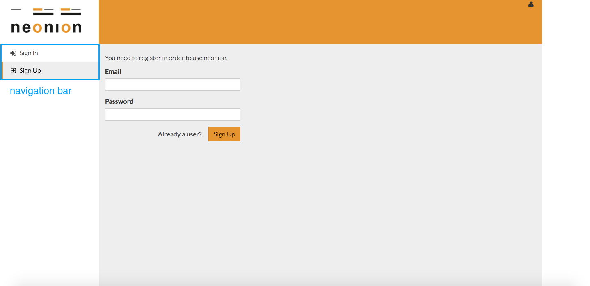 registration page
Import a Document to Your Workspace
After logging into neonion, you can import the document you want to annotate. Supported formats are text files and PDFs. The workspace is divided into three parts:
- My: all documents that you have uploaded
- Public: selected documents that are accessible for all users
- Groups: these are all the documents that were uploaded in groups that you belong to
Public and group workspaces enable you to work on a document collaboratively.
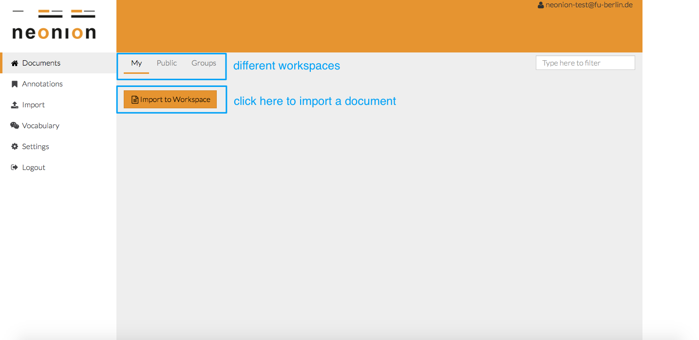 workspaces
In this example, we will open the document Plato - Wikipedia in the Public workspace.
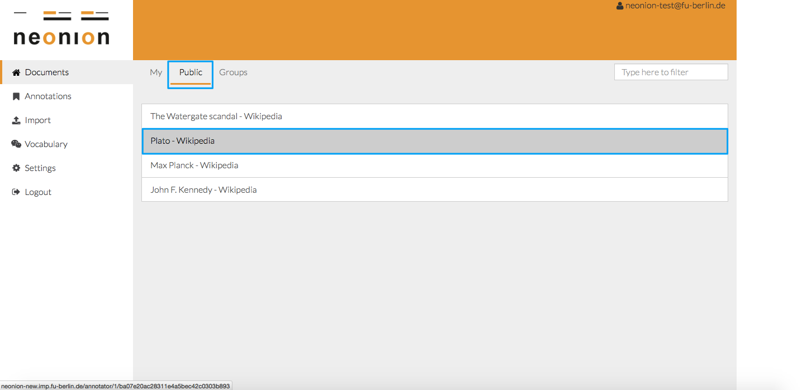 documents in public workspace
Annotator User Interface
This is the annotator interface with the context bar on the top and the tool bar to the left.
 annotator interface
annotator interface
Tool Bar
The tool bar provides several tools to support the annotation process. The symbols are explained top down.
- Home: brings you back to your workspace
- Contributors: displays or hides the annotations of contributors
- Annotation Mode: changes between Commenting, Highlighting and Concept Tagging
- Jump to last Annotation: brings you to the last created annotation in this text
Context Bar
The context bar shows detailed information about this specific document.
- number of annotations
- number of contributors
- title of the document
- visibility (private, public or group name)
- user ID of the person logged in
Start Annotating
Annotation Modes
- Commenting: opens a free text field for adding a comment. Shortcut: CTRL+ALT+A
- Highlighting: emphasizes the selected text by color. Shortcut: CTRL+ALT+S
- Concept Tagging: assigns a concept to the selected text. Shortcut: CTRL+ALT+D
Switch Annotation Mode
You can switch the annotation mode through the tool bar or via the shortcuts. The color of the annotation indicates the applied annotation mode: orange for Comments, yellow for Highlights and green for Concept Tags
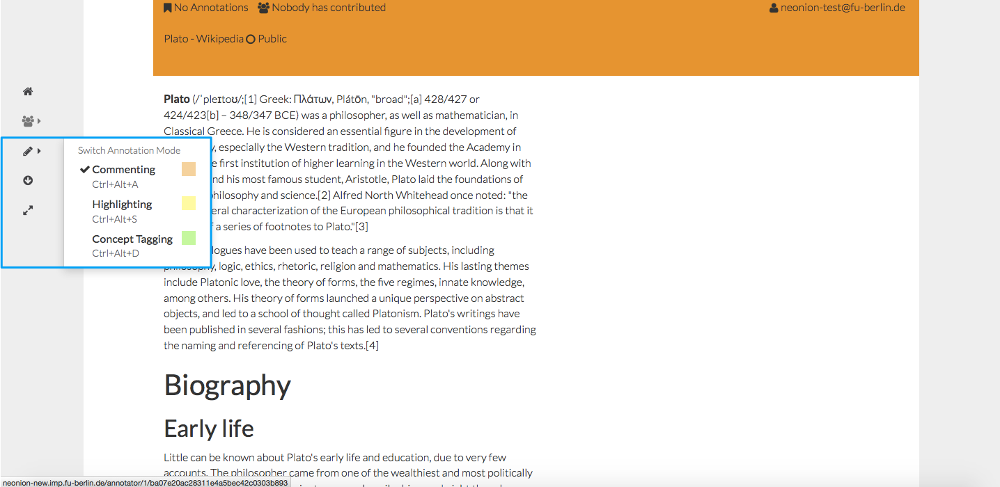 annotation modes
Create Highlights
Important text passages can be highlighted in order to structure the text.
 add a highlight
add a highlight
Create Comments
You can also add a comment to a specific part of the text.
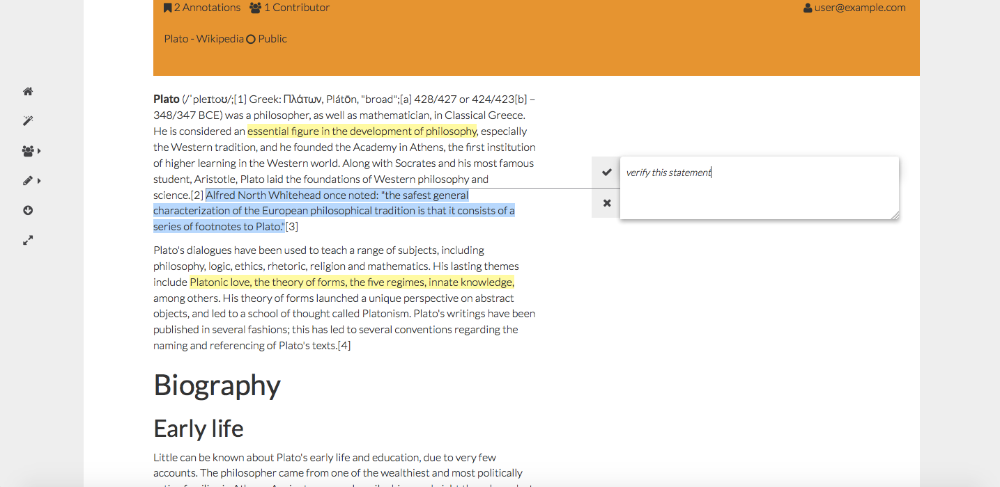 add a comment
If you hover over a comment, you can see the added text as well as the person who annotated this phrase. In addition, you have the option to edit or delete the comment.
 hover over annotation
hover over annotation
Concept Tagging
Assign a concept to a specific text part. In the following example, we assign the concept consortium to the Max-Planck-Gesellschaft.
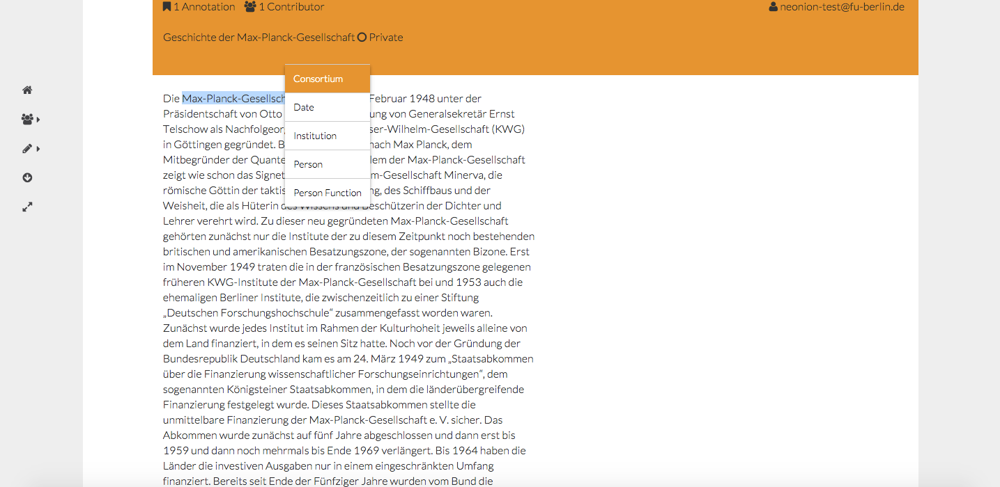 add concept tag to a text part
Text parts assigned to the concept person can be further identified with a specific person by using a linked data identifier such as the Wikidata Identifier. If there’s no matching suggestion, the person can be categorized as Unknown Resource.
Here, we link Otto Hahn to Otto Hahn *1879-03-08 deutscher Chemiker und Nobelpreisträger from Wikidata.

In the third step, we can create a relation between two entities. The possibile relations for each concept are defined in the vocabulary.
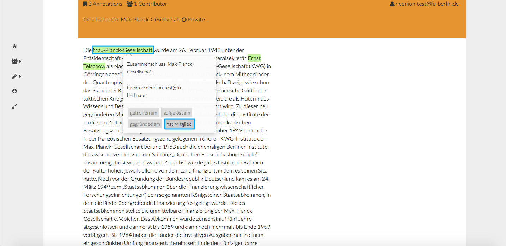
Gain a Deeper Insight From Your Annotations
The annotation overview enables you to analyze your results in more depth. On the page of the concept tags, annotations are grouped by concept and then by concept name.
Overview of Annotations
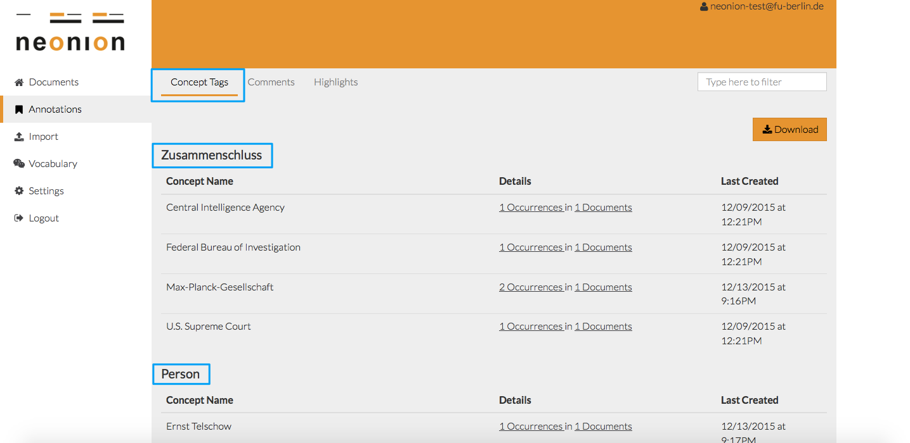 annotation overview
The overview gives you further details about every single annotation. You can see how many times a specific concept name has been annotated in how many different documents and when a concept name was annotated for the last time.
CSV Export
To enable the reuse of your annotations, you have the possibility of exporting all annotations including metadata via CSV.
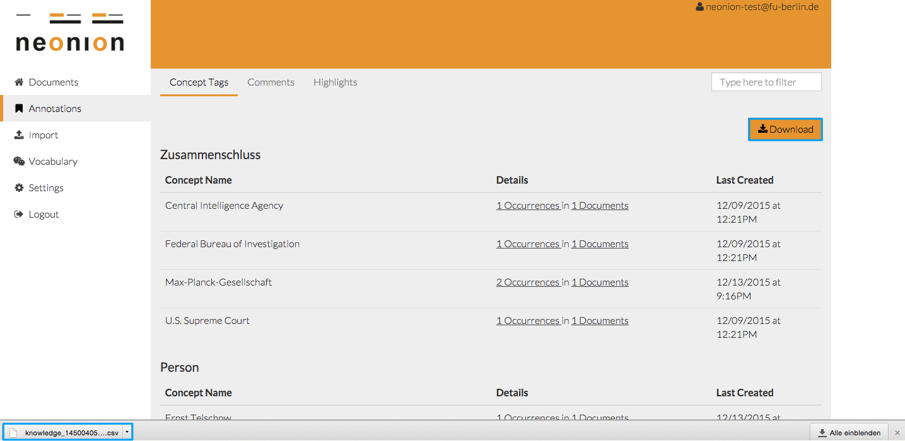 download CSV file
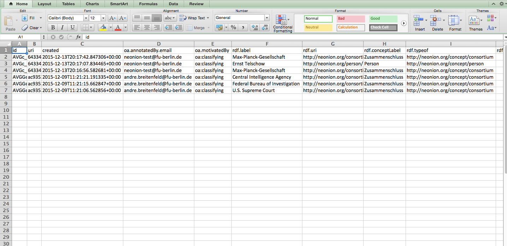 metadata in CSV file
Vocabularies
In order to allow Concept Tagging, we can define our own taxonomy with the aid of controlled vocabularies. You can choose an existing vocabulary or create your own before you start annotating. The default vocabulary contains the entitites Consortium, Date, Institution, Person and Person Function. Every vocabulary must at least contain one concept and every concept can have assigned properties.
Create a New Property
Change to the tab Properties and click on the button Create Property.
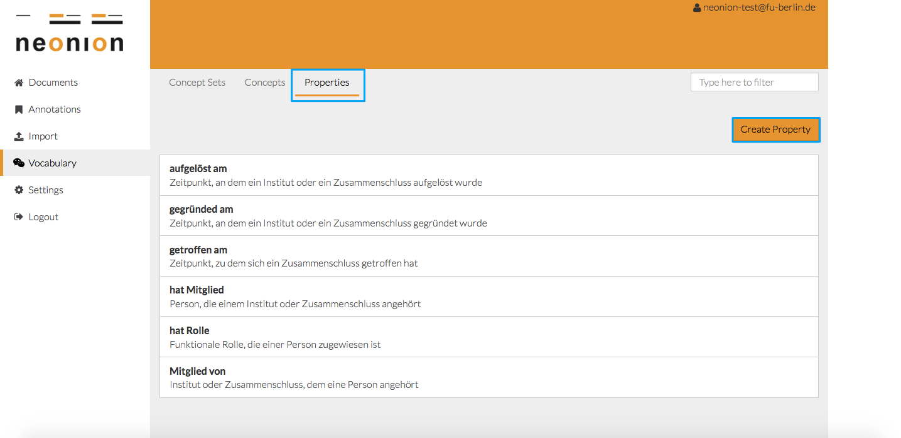 listed properties
Fill in a label, a description and assign concepts that should have this property. You can additionally add the inverse property.
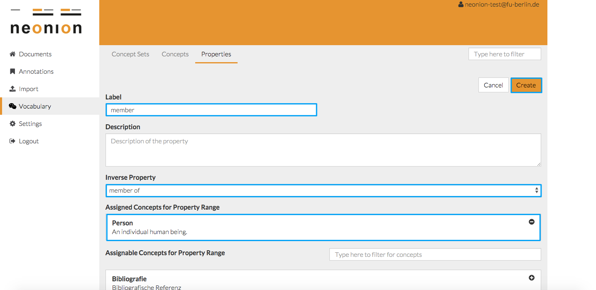 create a new property
In the example above, the property is member and the assigned concept Person. If we construct an inverse property called member of with the assigned concept Institution, we are then able to construct two relationships:
- Person is member of an Institution
- Institution has member Person
Create a New Concept
Change to the tab Concepts and click on the button Create Concept.
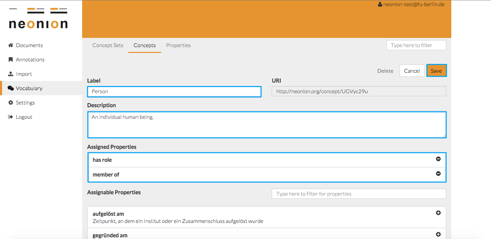 create a new concept
Create Your Own Vocabulary
Click on Vocabulary in the navigation menu to see the currently existing vocabularies. You can create a new one if required.
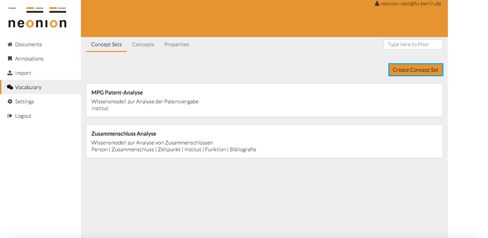 listed vocabularies
Fill in a label, a description and add at least one concept to your new vocabulary.
In the following example, we create the vocabulary research institutions. This vocabulary contains two concepts: Person and Institution.
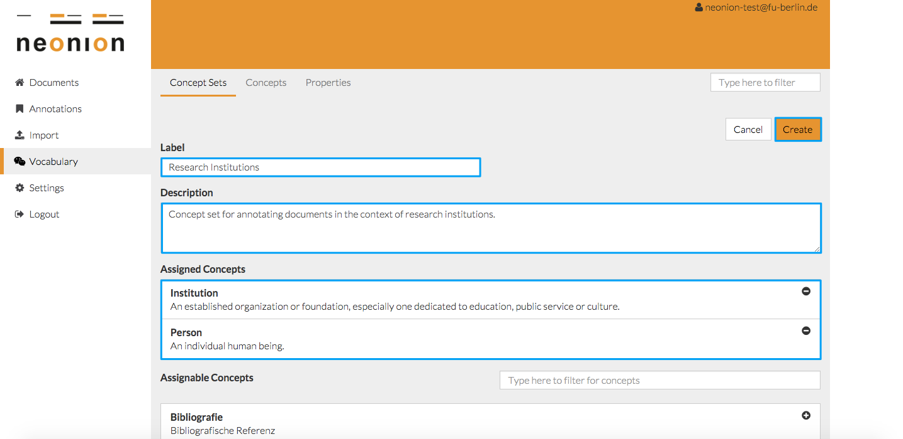 create a new concept set